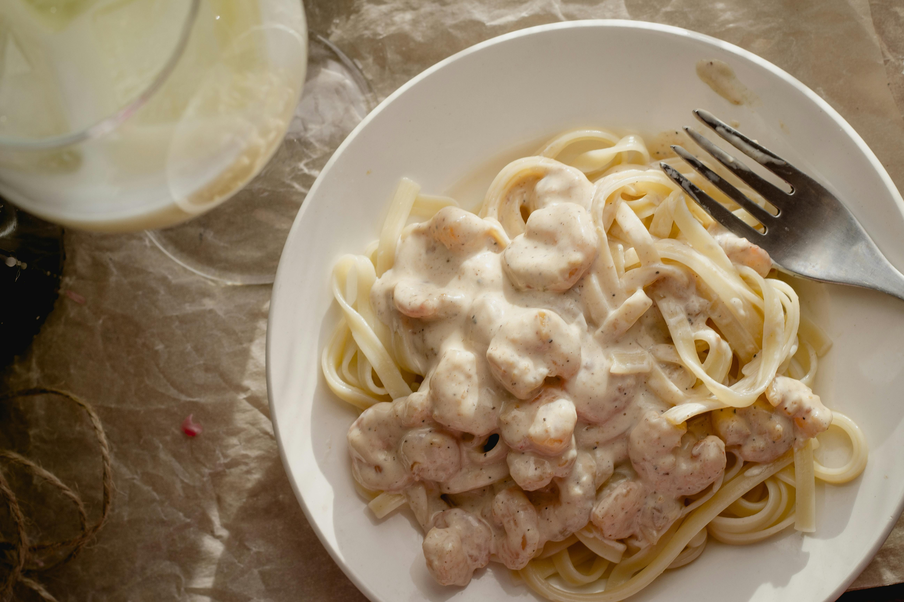
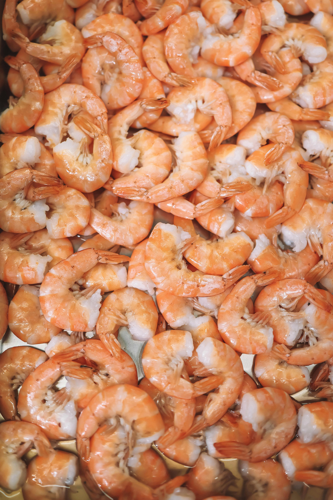
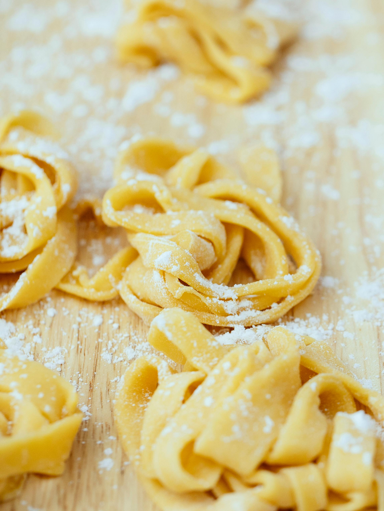
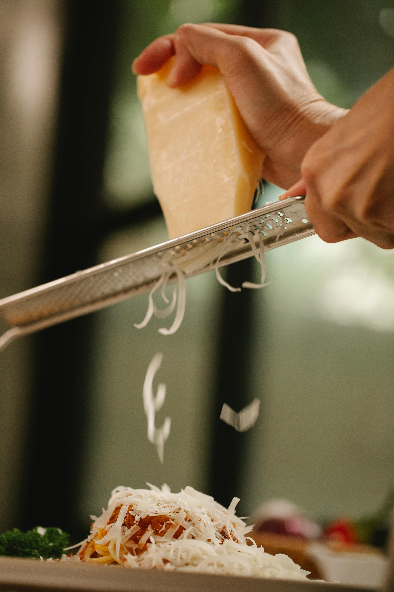

Shrimp Fettuccine Alfredo

Description
This recipe tastes amazing thanks to the creamy parmesan sauce paired with tender shrimp. With under an hour of prep time and cooking, you can enjoy a meal that tastes like Olive Garden, in the comfort of your own home.
Quick Facts
- Prep Time: 20 mins
- Cook Time: 25 mins
- Total Time: 45 mins
- Servings: About 6
Ingredients
- 1 pound fettuccini pasta
- 1 tablespoon butter
- 1 pound cooked shrimp - peeled and deveined
- 4 cloves garlic, minced
- 1 cup half-and-half or heavy cream
- 6 tablesoons grated parmesan cheese
- 1 tablespoon chopped fresh parsley
- Salt to taste



Steps
- Fill a large pot with water, add a pinch of salt, and bring to a rolling boil. Cook fettuccine at a boil until desired tencerness is acheived, generally about 8-10 minutes. Drain.
- Heat butter in a skillet over medium heat. Once butter is melted and begginning to bubble, cook and stir shrimp for 1 minute.
- Pour in half-and-half and stir. Add parmesan 1 tablespoon at a time while stirring. Mix in parsley and season with salt. Bring to simmer and stir frequently until sauce is at desired thickness.
- Stir fettucine into sauce until coated evenly and serve hot.